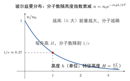

玻耳兹曼分布律
一句话定义
玻耳兹曼分布律给出平衡态下分子处于能量为 的状态（或状态区间）的数目随能量指数衰减的规律：，描述分子按能量的占据概率。
定性
先把这个”能量分布”看个清楚。
麦克斯韦分布问的是”分子速率如何散布”，它只关心动能。但分子还有另一种能量——势能。分子站得越高（重力势能越大）、或处在某个更”耗能”的状态里，就越”难”待住。玻耳兹曼分布要回答的正是：处于不同能量的分子，数量是怎么分布的？ 答案是：能量越高，能待住的分子越少，而且按指数规律锐减。
想象一座山，山下平地上挤满分子，越往山顶走人越少，而且少得飞快——这就是玻耳兹曼分布的画像。它用一枚”玻耳兹曼因子” 做判断：能量 越高， 越小，能占据该状态的分子数越少。温度 越高，这个”衰减”越平缓——热运动越剧烈，分子越有能力往高能量处钻。
它在体系里的位置：玻耳兹曼分布是麦克斯韦分布的更一般形式。麦克斯韦只看动能、无外场；玻耳兹曼把动能和势能都算上（）。当势能 （无外场）时，玻耳兹曼分布就”只剩动能项”，正好退化成麦克斯韦分布。所以麦克斯韦是玻耳兹曼的一个特例。
反直觉的点：“能量高”这个”优点”反而让分子更稀有，这是统计的反直觉。直觉上高能量好像”更强”，但统计上要占据高能态必须让分子”攒够”能量，而攒够的概率极小，所以高能态分子数被指数压下去。这解释了为什么山顶气压低、为什么化学反应在高能态（活化能）很难自动达到——万事都要”数一数有多少分子够得着那个能量”。

图：在重力势场中，分子数密度（或压强）随高度指数衰减 ；能量越高分子越稀，衰减由玻耳兹曼因子 决定。
数学表达
玻耳兹曼分布律的基本形式：处于能量为 的状态（或能量区间）的分子数与
成正比，即 ， 是归一化常数。物理上 称为玻耳兹曼因子。
对保守力场（如重力场），能写成粒子数密度随位置/能量的分布。以大气为重力场 为例（动能部分积分掉后），分子数密度随高度：
对应的气压（等温大气近似，）：
符号： 是分子质量， 是重力加速度， 是高度， 是玻耳兹曼常数， 是温度，、 是 处的数密度与气压。
读这个结构：玻耳兹曼因子 是”分子的能量账”——能量 作为”负债”越高、 越小、占据越少； 是”分子平均份子钱”。因此”分子能量 与平均热能 之比”越大，占据概率越低。 可以是动能（得麦克斯韦）、可以是势能（得大气分布）、可以是任意其它能量形式（化学反应活化能、能级布居）。
关键性质
-
能量越高，占据数指数越少。 。为什么：玻耳兹曼统计说一个状态被占据的概率 ， 越大那个状态的玻耳兹曼因子越小。处于”高能态”需要分子攒够能量，概率指数变小——这就是高能态稀少的统计原因。
-
温度越高，高能态占据数上升、衰减越缓。 越大， 越大。为什么：温度高则分子平均动能大，越”有底气”爬到高能态。所以加热会让更多分子进入高能态（如化学反应更剧烈、更多电子跃迁），这是升温加速许多过程的内在机制。
-
，含动能与势能。 无外场（）时只剩动能项，退化为麦克斯韦分布。为什么：玻耳兹曼因子里的 是分子总能量；动能项是麦克斯韦、势能项描述位置分布。这使玻耳兹曼分布既能讲”速率”也能讲”位置”，比麦克斯韦更普适。
-
只适用于保守力场中的平衡态。 势能须是可定义的保守势能（重力、静电场等），且系统达平衡。为什么：分布 是”统计权重”的平衡结果；非保守力、剧烈非平衡都会破坏它。
-
是配分函数与统计力学的一切起点。 归一化常数 （配分函数）是统计力学里算一切平均量的核心。为什么：配分函数把玻耳兹曼因子对全部状态求和，平均能量、熵、自由能都能从 导出——玻耳兹曼分布是这一整套理论的基石。
推导
现在把玻耳兹曼分布真正推出来——不是背 ，而是看清它是”统计权重”的必然。这里用一条更直观的”重力场推大气”路线，与麦克斯韦的”速度高斯”路线互为印证。
先抛问题：为什么海拔越高，空气越稀薄，而且按指数衰减？“每升一层，分子就少一个常数比”的规律，到底从哪来？
设物理场景。取等温大气（近似），温度为 ，重力加速度 。考虑高度 处一个厚度 的薄气层。
列依据。三条：一是流体静力学——薄层上下表面的压强差支撑该层气体重力：；二是物态方程（理想气体）：，即密度 ；三是等温假定（温度不随高度变）。
逐步演绎。第一步，用物态方程把密度换成压强。，代入静力学关系：
第二步，这是可分离变量的微分方程：。积分，从 （）到 ：
第三步，指数化得
回头看。结论水到渠成：大气随高度指数衰减，正是”玻耳兹曼因子 “在重力场（）下的体现。它背后的逻辑非常朴素：越高层的分子，其重力势能越大，而”分子能爬这么高”的概率按 指数减小。所以”每升高一个特征高度 ，分子数就除以 “——这就是玻耳兹曼分布的严格出处。它也间接说明：玻耳兹曼分布不是天书，而是”分子在各种势能下如何按能量布居”这一统计事实的简洁表达。
为什么重要
玻耳兹曼分布是统计力学和许多科技领域的基石，其地位与后果：
- 解释大气逃逸与分层：大气随高度指数稀薄（），月球因 小、不足以留住大气；地球上层 轻分子（氢、氦）更易逃逸——这些都靠玻耳兹曼因子定量。
- 支配化学反应速率：阿伦尼乌斯公式 正是玻耳兹曼分布的”活化能版”——反应靠少数”攒够”活化能 的分子发生，温度升则 增大、反应速率指数变快。
- 解释光谱强度与能级布居：原子、分子各能级布居数 ，温度不同，激发态布居不同，光谱线强度随之变化——这是光谱测温、激光工作能级布居的基础。
工程动机：半导体载流子激发（）、热电子发射、化学平衡常数、大气污染扩散高度分布，全都与玻耳兹曼因子挂钩。它把”能量”与”概率”捆绑在一起，是理解”为什么某些能量难达到、达到后又极少数”的万能钥匙。
它也解释了一个看似普通的常识：为何”越高海拔，原子、分子种类越不同”——重分子总高度分布”矮胖”，轻分子分布”高瘦”，与 挂钩。这让光谱分析、大气成分探测、同位素分层，都能从玻耳兹曼因子出发反推分子量或温度。一份分布，读出温度、读出质量、读出成分——玻耳兹曼因子是天然的分析工具。
适用条件
玻耳兹曼分布的成立须满足：
- 平衡态：系统须达到统计平衡，分子按能量稳定布居。非平衡、持续注入能量的系统不适用。
- 保守力场：势能须可定义（重力、静电力等）。非保守力（摩擦、耗散）或需耗散场时不适用。
- 经典接近：能量连续、分子可区分、玻耳兹曼统计成立。量子简并（玻色子、费米子）需用玻色-爱因斯坦或费米-狄拉克分布。
- 状态权重已知：若要精确计数，须知道每个能量的状态数（简并度 ），。
边界要说清：高温高密（量子简并）、强关联、非平衡输运都会偏离玻耳兹曼分布。真实边界：中子星/白矮星中的电子气（费米统计）、激光极度非平衡的上能级布居、强湍流大气，均超出简单玻耳兹曼分布范围。
边界与误区
-
误区一：把玻耳兹曼分布与麦克斯韦分布混为一谈。 根因：都含指数、都属统计分布。正确区别：麦克斯韦只含动能（、纯速率分布）；玻耳兹曼含动能+势能（、按总能量布居），无外场时玻耳兹曼的高斯动能部分才退化为麦克斯韦。
-
误区二：玻耳兹曼因子里的 用错单位或能量类型。 根因： 里的 与 必须是同种能量。正确区别： 是指分子该状态的能量（含动能和势能）， 是平均热能（），两者同量纲才可求比值。把分子活化能误填成摩尔量、或把能级能量与键能混用，都会算错。
-
误区三：以为玻耳兹曼分布能描述任意”非保守”情形。 根因：看到”能量”就觉得放之四海皆准。正确区别：它只对保守势场的平衡态成立。摩擦、耗散、非保守力、剧烈非平衡都不适用。
-
误区四：以为高能态”一定”极少。 根因：只看 随 递减。正确区别：占据数还乘简并度 （该能量的状态数）与温度 。温度极高时各能级布居趋近均匀；少数高简并的能级在电子、光子系统中也可显著。 管”一个状态的难易”，实际占据还要看”有多少个同能级状态”。
对照
最容易和玻耳兹曼分布混的是麦克斯韦速率分布。两者只用一个关键差异区分：
玻耳兹曼分布按”总能量（含势能）“布居，麦克斯韦只按”动能”分布。
玻耳兹曼 含动能与势能，能描述位置/高度/能级布居（如大气、能级）；麦克斯韦 只含动能，只描述速率。一句话记忆：麦克斯韦问”速度怎么散”，玻耳兹曼问”能量（含位置）怎么待”——前者是后者在无势能场时的特例。
例子
我们用玻耳兹曼分布算大气的”特征高度”和”气压减半高度”。
取等温大气，，，空气平均分子质量 （氮氧均值），。特征高度（ 衰减到 的高度）：
气压降为一半的高度 满足 ，即
等温近似下，每升高约 6 公里，气压减半；约 8.8 公里减到 。
反推工程含义：这正是”山顶气压低、高原氧气稀薄、高空必须增压供氧”的定量依据。更深一层：轻分子（氢、氦）的 小，其 大、更不易被束缚，故高层大气、乃至行星逃逸中最先跑掉的是轻气体——地球上层氢氦稀薄、月球留不住大气，都是玻耳兹曼因子 的”质量判罚”结果。玻耳兹曼分布把”能量、高度、质量”与”分子存在概率”绑在一起，一句指数函数就讲清了大气与行星的许多天象。
再把它接到”化学与材料”：玻耳兹曼因子统摄着一批以 为骨架的工程规律——化学反应的阿伦尼乌斯式、半导体载流子激发、热电子发射、缺陷产生，都靠”少数分子挣够能量 “来驱动。它道出了一个共通的工程直觉：很多过程的快慢，都由一个特征能量 与热能 的比值决定；温度每升高一点， 就指数增长，于是反应、扩散、导电急剧加速。把”活化能”这个开关摸清，就能预判”升温会把过程加快多少”。